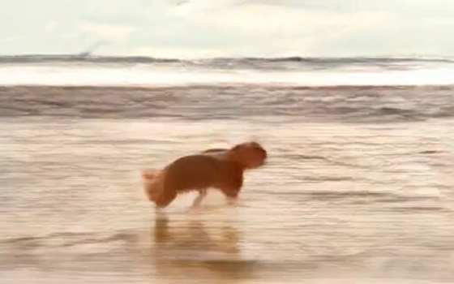
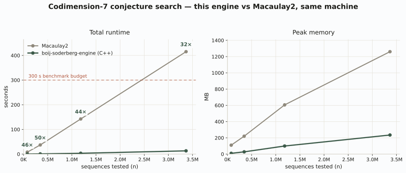
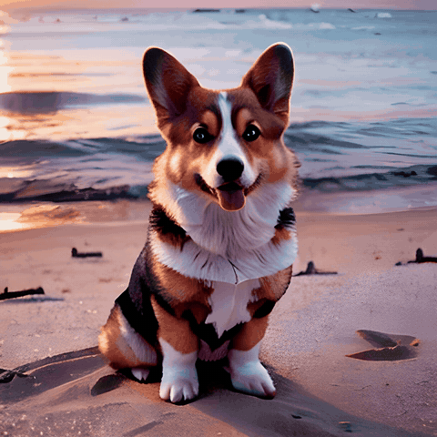

I write low-level systems by hand, and I build larger ones by directing and evaluating AI coding agents. My clearest solo work is a C++ engine that runs certain algebra computations much faster than the standard tool. I also review agentic coding models professionally.
I'm looking for research-engineer, applied-AI, agentic-coding, or evaluation work.
ltx-studio
A local text-to-video studio that runs two video models on a single 8 GB GPU and chains short shots into longer clips that stay coherent. Built from scratch in about a week and a half:
- A resident vision-language model (Qwen3-VL, 4-bit) runs as an agent that turns plain-language direction into runnable generation settings.
- I built a measurement layer to go with it: seam and drift telemetry, plus a blind A/B comparison harness, so I can tell whether a change actually helped.
- Drift control between shots uses AdaIN latent anchoring (from diffusers, cited) and a color-matching pass I wrote.


The clip that exact run produced, beside a second render from the same studio:

geo-map-v2
A real-estate heatmap on the surface. Underneath, the most production-grade system I've built: a general geospatial data platform. Raw sources are ingested into adapted artifacts, recorded in a hashed canonical ledger with full provenance, frozen into monthly snapshots, scored, and published to a strictly read-only serving runtime, so every number a client sees traces back to an immutable record. The county registry is the extension point: new regions, sources, and verticals are designed to bolt on without touching the core.
- On top sits a full map application and renderer: an interactive client (vendored MapLibre GL) that draws the county's official GIS layers as toggleable overlays — parcels with per-parcel detail, the road and highway network, ZIP areas and boundaries, schools by level, and school attendance zones — over the scored basemap.
- 24 test modules, including SQL-safety, storage-integrity, and schema-version suites.
- I built it by running several AI coding agents across git worktrees under a written set of rules — test-first, prompt-injection defense, and so on. The agents wrote most of the volume; the architecture and the test gates are mine.


boij-soderberg-engine
A C++ engine I wrote from scratch, by hand, no AI in the loop. It computes pure Betti tables and searches for counterexamples to two Betti-number lower-bound conjectures. The computation behind one of the three main theorems in a paper I co-authored (arXiv:2512.24320) ran on this engine in days; Macaulay2 could not complete the search at all.
- Exact-integer arithmetic overflows silently here, so I grow the scaling factor incrementally and stop early once it clears the threshold; the search never overflows.
- Benchmarked against Macaulay2 on the same machine: roughly 26–46× faster (up to ~50×) and about 20× less memory. I also ran my algorithms inside Macaulay2 to separate the algorithm from the language, and it finished searches that ran Macaulay2 out of memory.

planar-geometry-engine
A full computational-geometry engine I built for fun, from a bare terminal in vim and make, with no dependencies beyond the C++ standard library. It covers geometric predicates, polygon construction and random polygon generation, point-in-polygon and collision queries, ear-clipping triangulation, Delaunay triangulation, and Voronoi diagrams, with local SVG and Desmos-based viewers for exploring the output. The core predates my AI-agent workflow and is entirely hand-written; later upgrades used agents.
- Robustness is the hard part of geometry code, so the predicates handle the degenerate cases (collinear inputs, duplicate points, orientation) with explicit epsilon discipline.
- Verified by a hand-rolled TDD harness: 14 suites covering the predicates, both triangulations, and the Voronoi output.


AnimateDiff studio
An upgraded local diffusion-video pipeline for an 8 GB RTX 50-series GPU, where the usual acceleration kernels don't exist yet.
- I directed AI agents through the internals, steering each change and verifying it on the hardware: a PyTorch-SDPA attention path with batch-chunking to keep memory bounded, a from-scratch LCM scheduler, a conv-aware LoRA merge, and sliding-window denoising for longer clips.

Most of the larger systems above were built by directing AI coding agents, not typed by hand. What I bring is the architecture, the tests, and the evaluation that make that output reliable. I hand-write the C++ so I know what "correct" looks like underneath, and where I've reused someone else's math or code, I say so.
The Hollow Icon
On reason, faith, and what the machine can and cannot counterfeit. Its technical core is the specification problem: an optimizer can aim ever more tightly at whatever target we write down, while nothing in it can see whether the target is the right one. It's the same problem my eval harnesses deal with in miniature.
Boocher, Huang, Wolf. Arithmetic in the Boij–Söderberg Cone. arXiv:2512.24320 (Dec 2025).
University of San Diego, 2022–2025 — transferred in for CS, added mathematics my first year, then made it primary and kept going past the major's requirements: three semesters of abstract algebra, two of real analysis, logic and formal methods, computational topology and geometry, combinatorics, number theory, graph theory, mathematical modeling. Software-engineering capstone in 2023–24 (lead dev, authentication and access control).
DePaul University, 2021–2022 — Dean's List, two of three quarters; major coursework largely in CS (algorithms, cryptology, database management, OOP).
Clovis Community College, 2019–2021 — A.S. Computer Science, A.S. Mathematics.
Proficient: C/C++, Python, algorithms, GPU / VRAM-constrained systems, AI-agent orchestration, testing and evaluation, Git, Linux.
Familiar: PyTorch and diffusion internals, Docker (containerized task creation, execution, and evaluation), SQLite pipelines, LLM-agent and JSON-protocol design, evaluation harnesses, quantization and model offloading.
A brown belt in judo, earned in three years, and my club's 2025 Judoka of the Year. A lector, acolyte, and chanter at my Greek Orthodox parish.